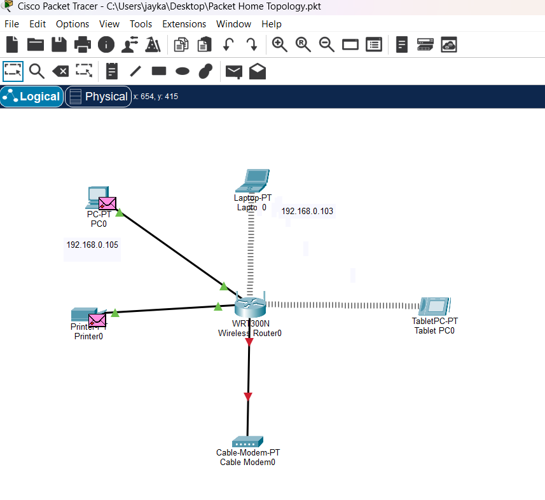

🌐 Cisco Packet Tracer Network Lab
Built and configured a network environment using Cisco Packet Tracer to practice IP addressing, router configuration and network connectivity.
What I Practiced
- IP address configuration
- Router interface configuration
- Network connectivity testing
- Ping troubleshooting
- Interface status verification
- ARP and CDP investigation
Commands Used
show ip interface brief
show arp
show cdp neighbors
show interface
ping

Cisco Packet Tracer network configuration and connectivity troubleshooting lab.
Tools: Cisco Packet Tracer
Skills: Networking, IP Addressing, Cisco CLI, Troubleshooting
📡 Wireshark Network Analysis
Practiced capturing and analyzing network traffic using Wireshark to understand how devices communicate across a network.
What I Practiced
- Packet capture
- TCP/IP analysis
- ARP traffic analysis
- ICMP traffic analysis
- Network troubleshooting
Tool: Wireshark
Skills: Packet Analysis, Network Monitoring, TCP/IP, Troubleshooting
🔎 Nmap Network Scanning Lab
Practiced network discovery and service enumeration using Nmap in controlled lab environments.
What I Practiced
- Host discovery
- Port identification
- Service enumeration
- Basic network reconnaissance
Tool: Nmap
Skills: Network Discovery, Port Analysis, Service Enumeration
🐧 Linux Security Lab
Practiced Linux command-line operations, networking and system investigation as part of my cybersecurity training.
Areas Practiced
- Linux command line
- Network configuration
- Process investigation
- System administration
- Network troubleshooting
Platform: Linux
🪟 Windows Security Lab
Practiced Windows command-line and PowerShell techniques for system administration and basic security investigation.
Areas Practiced
- Windows command line
- PowerShell
- System investigation
- Basic security administration
Platform: Windows
🛡️ Cybersecurity Portfolio & Tools
Designed and developed this cybersecurity portfolio website to document my learning journey and build practical web-based security utilities.
Features
- Password strength checker
- IP / subnet calculator
- Port information checker
- Common port database
- Searchable port reference
- Cybersecurity project documentation
Technologies: HTML, CSS, JavaScript, Git, GitHub